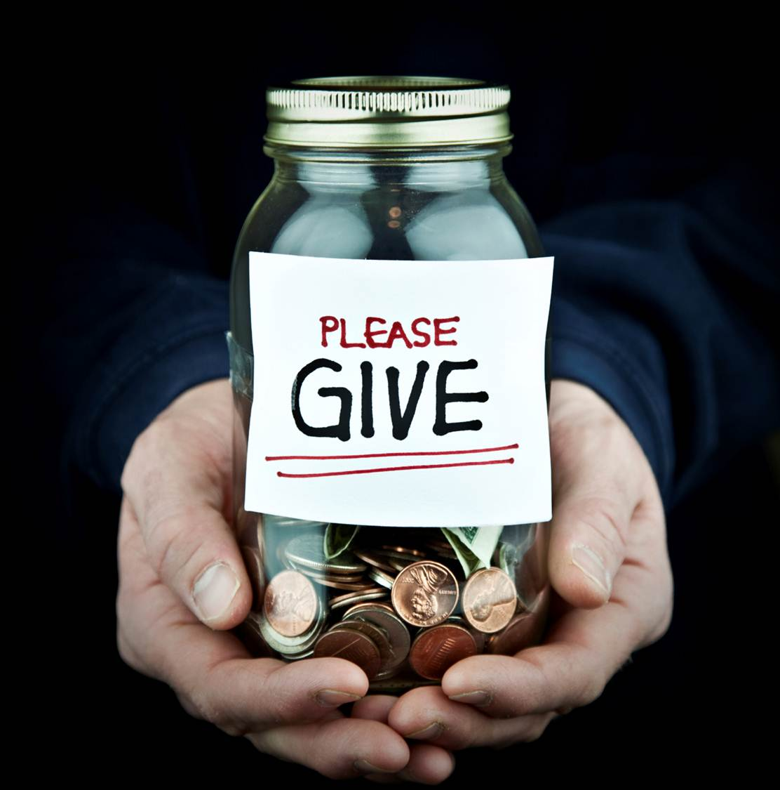
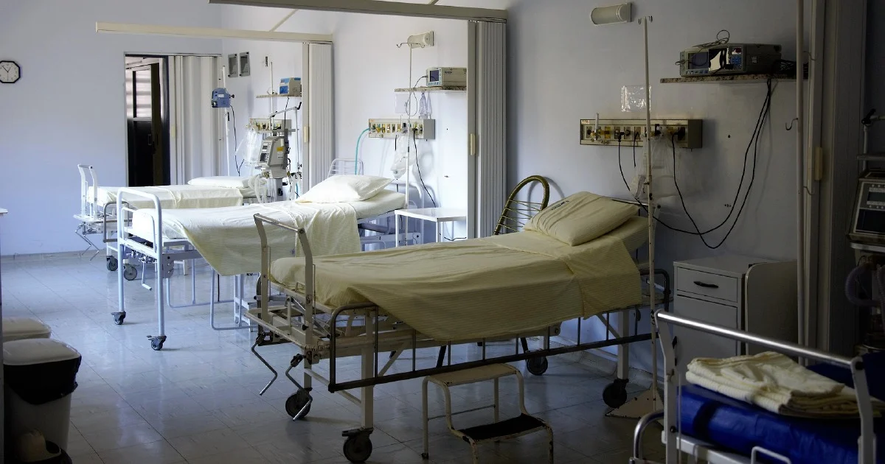
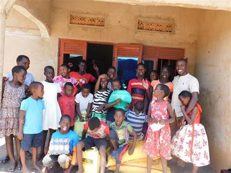

Six Degree Charity
We are all connected by six degrees and helping make life better.

What is Six Degree Charity About?
A charitable nonprofit organization aimed at bringing smiles to faces worldwide. We focus on rebuilding and providing essential services for a better life.
Our movement in a rural area.

A mood that got our organization feeling happy. For so long, no water here.

To Donate CLICK HERE
We offer scholarships to families and cash gifts to start small businesses.

What Is a Charitable Donation?
A charitable donation is a gift of cash or property made to a nonprofit organization to help it accomplish its goals. In the U.S., these donations may be tax-deductible.

What is Our Organization About?
We are all about giving — we mean it. To help one another rise and empower ourselves is part of Earth's goal, so by giving to the world's creatures, we create a new standard.
- We gather generous people and go to areas in need.
- We operate like a trust or foundation focused on charitable, religious, scientific, or educational purposes.
- We support civil defense volunteers and organizations through donations and services.
- We collaborate with different companies (e.g., Polanco, King Charmer, W.H.O, Nestle, LG Tech, Polystar, Bugatti, and many other technology, healthcare, and food industries) to maximize impact.

Where We Go and What We Do
The places include midwives' hospitals, and we make beds for the babies and provide food they will need.

- We go to hospitals and carry out charity by paying bills for sick patients who need treatment. 
- Where there are children in need, for the creatures of the earth are to be cared for, so we spread out to the fatherless and motherless children out there.
Up to 3000 orphanages around the world, sending things like food, clothes, medicine, and building materials.
 - Public Schools — providing scholarships and supplies
- Ghetto and poor areas — building new infrastructures
- Food distribution to the less privileged
- Building housing shelters for homeless children
Hospitals
Orphanage
And we make water systems possible for people to get clean drinking water.
Together with a team of generous people, we build hope...
Contact us
Call Phone Number: +234 (708) 631 2481
Email Address: jerrysamuel85@outlook.com